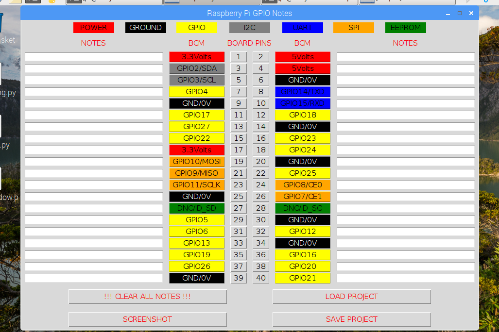
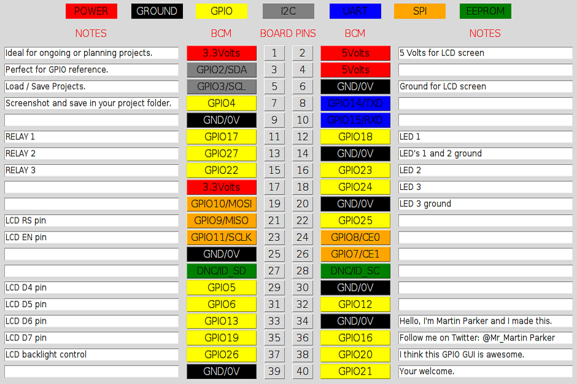
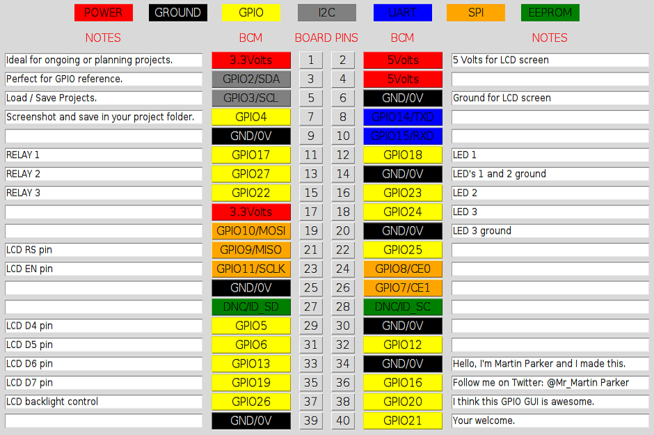

Raspberry Pi GPIO Notes GUI

I do many projects using the GPIO's and I thought it would be a great idea to make notes against all the GPIO's.
I wanted to be able to save it as a picture to put in the project folder or save the values in a CSV file so it can be edited
at a later date if the project changed in anyway. Load back in the CSV data to then update an ongoing project and correct spelling etc.
It would also serve a purpose as to reference the differences in the GPIO's other uses like SPI, UART and I2C.
Mouse over the pictures below for more information


